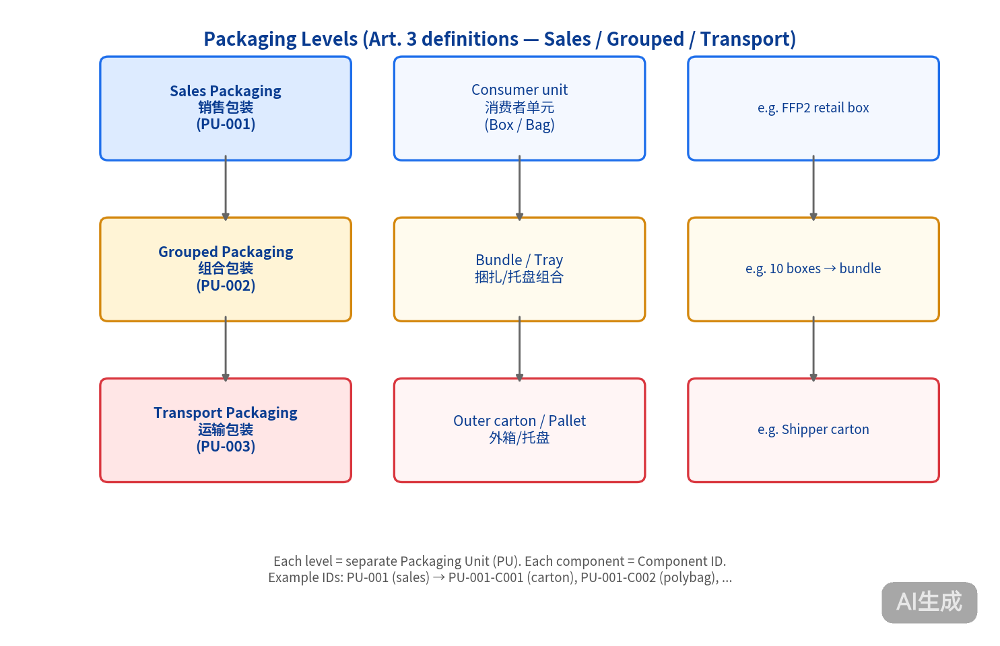
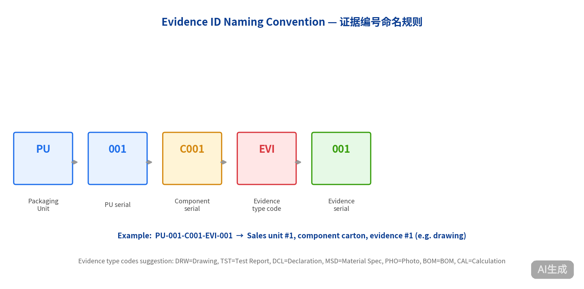
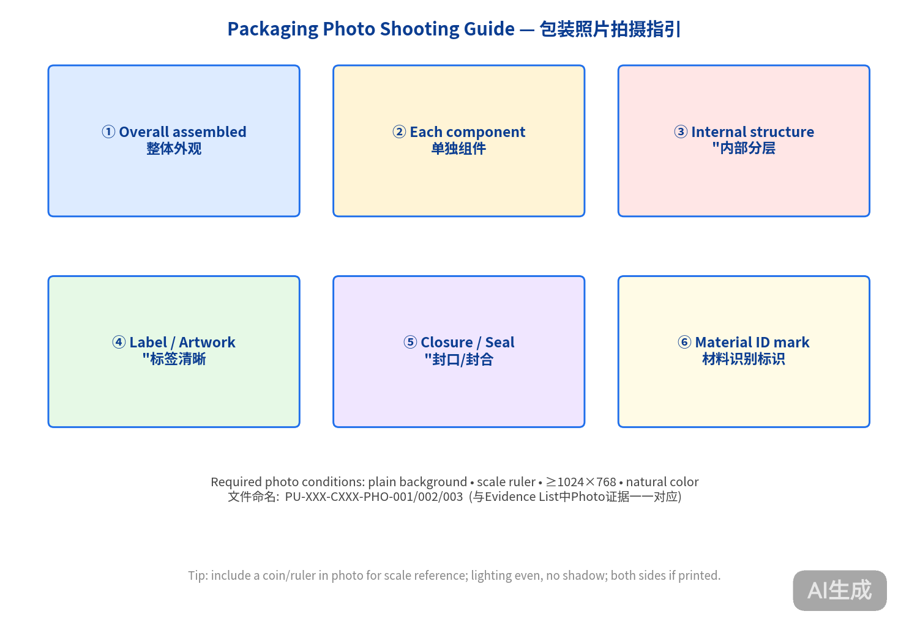
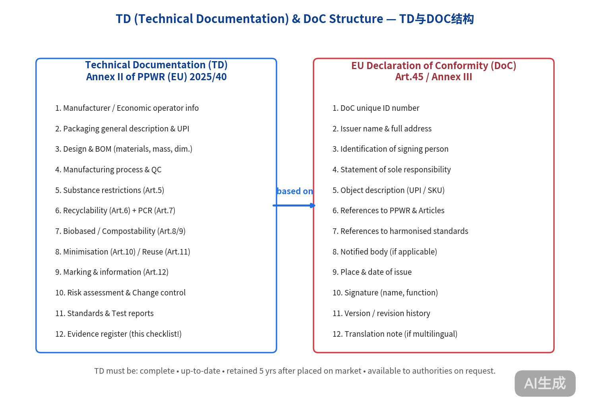
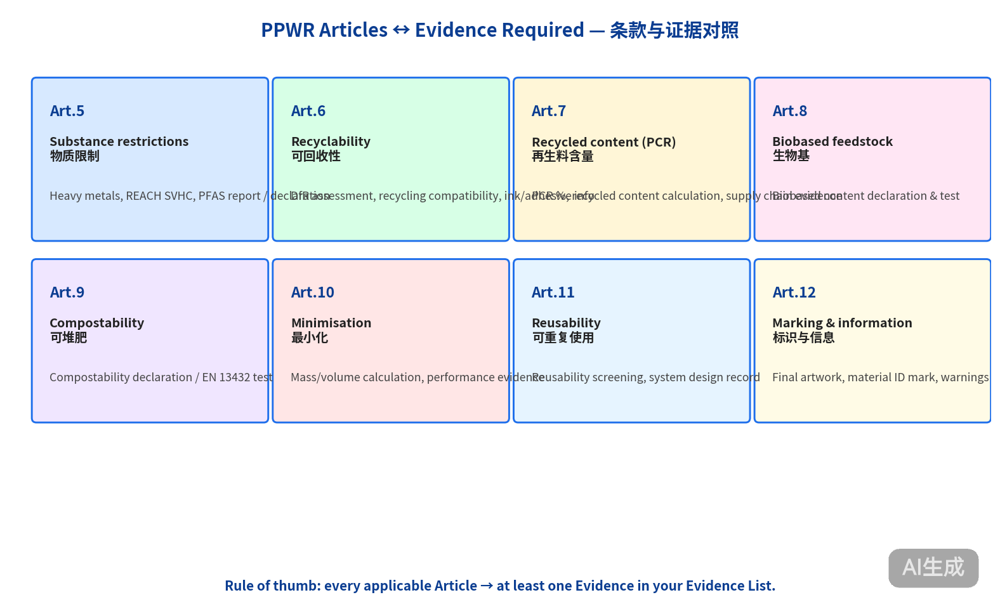

⚡ 一句话导读：
填好 PPWR_BOM V1.1（"包装用了哪些材料"） + PPWR_Evidence_List V1.1（"每份证明文件在哪里"），
这两份的内容就能直接对照 PPWR_Checklist V1.5（"19 大类证据要齐"）逐一打勾。
📁 三份 Excel 模板（已含示例与说明）
1️⃣ PPWR_Checklist V1.5 — 证据需求清单（19 大类）
"我需要提供哪些资料？" 一张表 19 大类逐项说明：要求内容、提交方式、图示参考、PPWR 条款、填写示例。
53 行10 列冻结表头
2️⃣ PPWR_BOM V1.1 — 包装材料清单
"我每个包装组件分别是什么？" 每个组件单独一行：组件号、类型、层级、描述、结构、材质、重量、尺寸、供应商、再生料比例、适用条款、关联证据。
2 个示例组件含列说明17 字段
3️⃣ PPWR_Evidence_List V1.1 — 证据文件清单
"每份证明文件在哪里？" 一份文件一行：编号、类型、日期、出具方、责任主体、是否符合、供应商、备注。
4 个示例证据含列说明图示索引
🖼️ 五张关键图示（写在 Excel 的"图示参考"列）

包装层级：Sales / Grouped / Transport

证据编号命名规则 (PU-XXX-CXXX-EVI-XXX)

包装照片 6 个角度拍摄指引

Annex II 技术文档 + Annex III DoC 要素对照

PPWR Article 5–12 与证据类型对照
📝 生产商填写步骤（4 步）
PPWR_Checklist V1.5，通读 19 大类，自检"我能否提供这些证据"。在 Readiness 列填 ✅ / ⚠️ / ❌。 PPWR_BOM V1.1，按"每个包装组件单独一行"填写：参考表内两个示例（Carton + Polybag）。PPWR_Evidence_List V1.1，每份文件单独一行，Evidence ID 格式严格遵循图 2。⚠️ 关键注意事项
- UPI / Component ID 务必唯一，同一产品不可两行同号；命名规则参考图 2。
- 检测报告须 ISO 17025 实验室，出具日期 ≤ 24 个月。
- PCR / Biobased 比例仅在宣称时填写，否则留 "—"。
- Artwork 终稿必须与最终印刷版一致；变更须留版本记录。
- DoC须含 Annex III 全部要素（编号 / 制造商 / 适用条款 / 标准 / 签署）。
- 本资料库未检索到 PPWR 内部映射文档，所有条款与证据对应基于 PPWR (EU) 2025/40 公约条文及行业通行做法整理，正式评估以权威公告版 (OJEU) 及各成员国实施法案为准。
📚 法规依据 (References)
| 主法规 | Regulation (EU) 2025/40 — Packaging and Packaging Waste Regulation (PPWR) |
|---|---|
| TD 要求 | Annex II — Technical Documentation |
| DoC 要求 | Art. 45 + Annex III — EU Declaration of Conformity |
| 核心条款 | Art. 5 物质限制 · Art. 6 可回收性 · Art. 7 再生料含量 · Art. 8 生物基 · Art. 9 可堆肥 · Art. 10 最小化 · Art. 11 重复使用 · Art. 12 标识 |
| 术语定义 | Art. 3 — Packaging / Sales packaging / Grouped packaging / Transport packaging / Packaging waste |